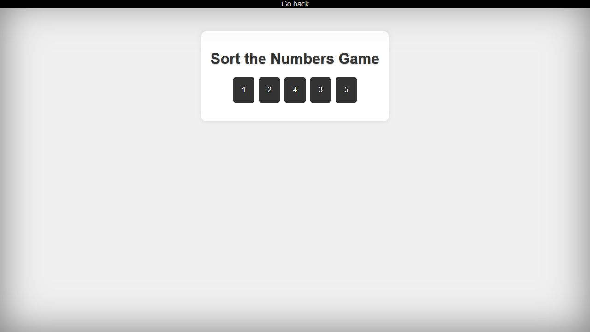

Browser Games
Sort the Numbers
Select shuffled numbers from one to five in ascending order.
Overview
A small browser game built around a simple sequence challenge: find the shuffled numbers and click them in order from one to five.

Key features
- Shuffle five numbered cards at the start of each round.
- Mark correct selections as you progress.
- Restart automatically after success or an incorrect selection.
How to use
- Select 1, then 2, 3, 4, and 5.
- Dismiss the result message to continue with a freshly shuffled round.
Development notes
- The original game uses mouse-clickable cards and browser alerts. Its interactions are preserved in this milestone.